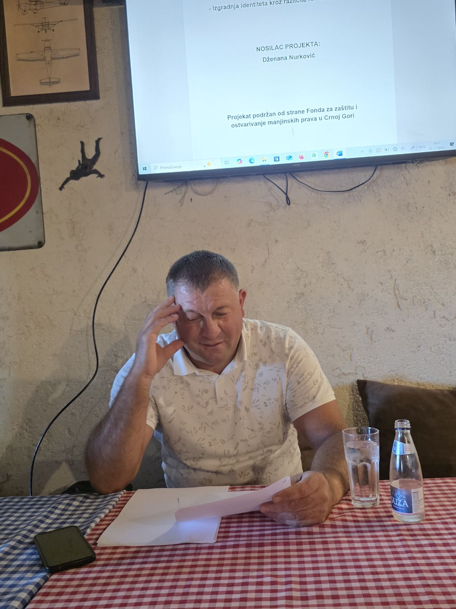

Interviju vodi: Dzenana Nurković
Kako biste opisali svoj religijski identitet i koliko je on važan za Vaše lično poimanje sebe?
Fadil:
Moj religijski identitet je islamski i on zauzima veoma važno mjesto u mom životu. Ne gledam na vjeru samo kao na skup pravila ili običaja, već kao na duboko lični put koji oblikuje način kako razmišljam, kako postupam i kako se odnosim prema drugima. Vjera mi daje smirenost, osjećaj svrhe i duhovne ravnoteže. Ona je prisutna u svakodnevici – od načina na koji započinjem dan, preko odnosa prema porodici, pa sve do toga kako donosim odluke. Religijski identitet me podsjeća na to da nisam sam, da postoji viši smisao i odgovornost prema drugima, a ne samo prema sebi.
Na koji način religijski običaji i praksa utiču na Vaš svakodnevni život?
Fadil:
Religijski običaji nisu za mene samo simbolika – oni su živi dio mog dana. Na primjer, redovna molitva mi daje strukturu dana i podsjeća me na zahvalnost. Post tokom ramazana je mnogo više od suzdržavanja od hrane; to je vrijeme kada se više usmjeravam na duhovnost, samodisciplinu i empatiju prema drugima. U mom domu, petkom se priprema posebni ručak nakon džume, a praznici kao što su Bajrami su trenutci okupljanja porodice i zajednice. Ti rituali me povezuju sa prošlošću, sa precima, ali i sa savremenim svijetom u kojem težimo očuvanju smisla. Sve te prakse učvršćuju osjećaj pripadnosti ne samo religiji, već i zajednici i kulturi.
Da li smatrate da je religijski identitet više lična stvar ili dio kolektivne pripadnosti zajednici?
Fadil:
Rekao bih da je to spoj oba. Vjera je, prije svega, ličan odnos između čovjeka i Boga. Ona je tiha, unutrašnja snaga koju svako od nas nosi i doživljava na svoj način. Ali istovremeno, religijski identitet nas povezuje i sa širom zajednicom – kroz džamiju, zajedničke molitve, praznike, porodične običaje. Kada klanjamo zajedno, kada učestvujemo u zajedničkim aktivnostima, tada osjećamo da smo dio nečeg većeg, nečega što nas povezuje i osnažuje. Takođe, kroz religiju učimo i odgovornost prema drugima, jer vjera nikada ne smije biti samo introspektivna – ona mora imati svoje lice i u društvu, kroz poštovanje, solidarnost i humanost.
Koliko smatrate da religija danas utiče na društvene vrijednosti i međuljudske odnose u Crnoj Gori?
Fadil:
Religija u Crnoj Gori, bez obzira na različite konfesije, ima snažan uticaj na oblikovanje društvenih vrijednosti. Kroz religiju se uče poštovanje starijih, briga o komšiji, pomoć slabijima, odanost porodici. To su vrijednosti koje nisu ekskluzivne ni za jednu vjeru, ali se kroz religijsku praksu njeguju i održavaju. U mnogim sredinama, posebno manjim, džamije i crkve nisu samo vjerski objekti, već i mjesta okupljanja, razgovora, savjetovanja. Naravno, savremeni život donosi nova pitanja i izazove, ali vjerujem da religijske vrijednosti mogu pomoći da ostanemo ljudi – saosjećajni, pošteni, iskreni – bez obzira na razlike među nama.
Šta biste poručili mladim ljudima koji se možda udaljavaju od religije ili je doživljavaju kao zastarjelu?
Fadil:
Prvo bih poručio mladima da ne gledaju na religiju kroz prizmu stereotipa ili površnih predstava koje često dolaze iz medija ili društvenih mreža. Religija nije zbir zastarjelih pravila niti nešto što se tiče samo prošlih generacija. Naprotiv, vjera se bavi najvažnijim pitanjima svakog čovjeka – ko sam, zašto sam ovdje, kako da budem bolji, kako da živim u skladu sa sobom i sa drugima. U tom smislu, religija nije nešto što ograničava, već nešto što pomaže čovjeku da pronađe dublji smisao i duhovni mir.
Razumijem da živimo u vremenu brzih promjena, tehnološkog napretka i sve većeg pritiska da se bude "u trendu". Mladi su često suočeni s izazovima koji ih udaljavaju od unutrašnjeg svijeta. Ali upravo zato vjera može biti sigurna luka – mjesto gdje se čovjek vraća sebi, gdje stiče osjećaj vrijednosti koji ne zavisi od društvenih mreža, popularnosti ili materijalnog uspjeha.
Religijski identitet ne mora biti krut ni zatvoren – on se razvija, sazrijeva, mijenja se zajedno sa čovjekom. Mladima bih savjetovao da postavljaju pitanja, da istražuju, da razgovaraju s ljudima koji vjeru žive iskreno i skromno. Neka vjera bude put, a ne pritisak. Neka im pomogne da izgrade vlastite stavove, ali i da se otvore prema drugima s poštovanjem i razumijevanjem.
Na kraju, istinska vjera ne traži da budemo savršeni – već da budemo svjesni, iskreni i spremni da učimo. Religijski identitet je, u tom smislu, poziv na ličnu autentičnost i duhovni rast. I kada ga jednom prihvatimo na pravi način, on nas ne opterećuje – on nas osnažuje.

← Nazad na početnu stranu